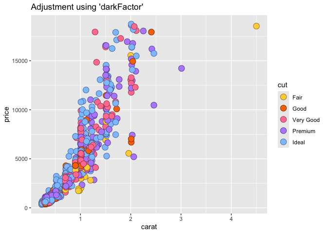
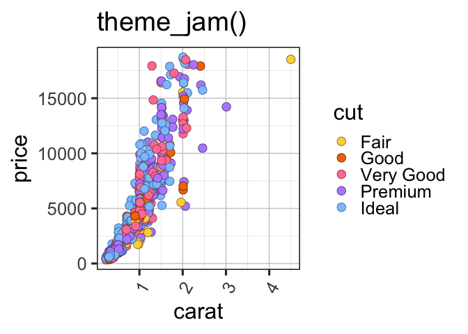
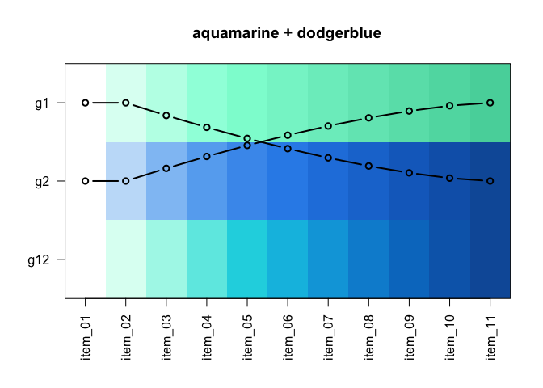

Why colorjam?
colorjam provides visually distinct categorical colors of arbitrary length, using an optimized pattern of chroma/luminance values.
- Scalable. Generate visually distinct categorical colors of arbitrary length.
-
Color-blindness friendly. Caveat: No set of colors can be represented perfectly for all types of color blindness. However the default color wheel in
colorjamwas optimized for maximal visual distinction between colors, informed by the three major types of color blindness simulated by the fantastic R packagedichromat(). - Optimized for experiment design. The first color default is gold, for experiment design factors that encode the control/reference as the first factor level. This reference is assigned the neutral color “gold” rather than bright red.
- Flexible. The color wheel can be changed to red-yellow-blue (painting), red-green-blue (default for computer monitors), or customized completely. The chroma/luminance step functions can be re-ordered or customized as well.
Installation
To install colorjam, you may use the remotes package:
remotes::install_github("jmw86069/colorjam");OR, we recommend the package pacman which helps keep the package updated:
### if necessary, install pacman:
# install.packages("pacman")
library(pacman)
p_load_current_gh("jmw86069/colorjam")The colorjam package is being prepared for CRAN in the “near” future.
Quick start with colorjam
For the examples below, two packages are loaded:
Categorical colors
dichromat
First generate some basic categorical colors, n=5 colors. We will use the function jamba::showColors() to display the colors.
showColors(rainbowJam(5));
To illustrate the effect of increasing categorical colors, we will create a list of categorical colors with increasing n.
colorList <- lapply(nameVector(c(12, 6, 3)), function(n){
rainbowJam(n, nameStyle="n");
});
color_pie(colorList,
main="Dichromat color wheel (default colorjam)");
By default, colorjam uses a “dichromat” color wheel, which produces color blindness friendly colors by avoiding a subset of colors that are not visually distinct for the three major types of color blindness.
red-yellow-blue
The recommended “full rainbow” color wheel is “red-yellow-blue”, distinctly different from the “red-green-blue” color wheel used in computer monitor color generation, and which underpins the majority of color functions in R.
The red-yellow-blue color wheel can be selected with:
-
preset="ryb"for red-yellow-blue -
preset="ryb2"for red-yellow-blue that starts with yellow (shiown below).
colorList1 <- lapply(nameVector(c(16, 8, 5)), function(n){
rainbowJam(n, preset="ryb2");
});
color_pie(colorList1,
main="Red-Yellow-Blue color wheel (starting at yellow)");
The benefit to starting color assignment with yellow is notable when the first category in a set is considered the reference or control group. For example, in a treatment study, the treatments are often encoded in an order c("Control", "Dexamethasone", "Etoposide") so that "Control" appears first. This order helps define statistical comparisons where terms are compared to "Control". As such, assigning a neutral color to the control term is quite convenient.
Previous versions of colorjam used a red-yellow-blue color wheel starting with red.
colorList1 <- lapply(nameVector(c(16, 8, 5)), function(n){
rainbowJam(n, preset="ryb", step="v23", nameStyle="n");
});
color_pie(colorList1,
main="Red-Yellow-Blue color wheel (previous default rainbowJam)");
red-green-blue
Similarly, the default color wheel “red-green-blue” can be used:
-
preset="rgb"the default RGB color wheel -
preset="rgb2"the default RGB color wheel, starting with yellow
The main reason not to use RGB is that so much of the color wheel is green-blue, and green-blue are the most difficult to distinguish from other colors with color blindness sensitive viewers.
colorList2 <- lapply(nameVector(c(20, 10, 5)), function(n){
rainbowJam(n, preset="rgb2");
});
color_pie(colorList2,
main="Red-Green-Blue color wheel (starting at yellow)");
colorList2 <- lapply(nameVector(c(20, 10, 5)), function(n){
rainbowJam(n, preset="rgb", step="v23");
});
color_pie(colorList2,
main="Red-Green-Blue color wheel (base R)");
Color-blending
The color wheel red-yellow-blue is particularly effective for color-mixing. The function blend_colors() has some useful features:
- Paint-style blending. blue + yellow = green. (For default RGB: blue + yellow = grey)
- Scalable for multiple colors. Able to mix more than two colors.
- Transparency-aware. Accounts for color transparency during mixing.
The argument do_plot=TRUE will plot a visual summary of the mixing results.
blent1 <- blend_colors(c("red", "blue"), do_plot=TRUE);
blent2 <- blend_colors(c("gold", "blue"), do_plot=TRUE);
blent3 <- blend_colors(c("gold", "red"), do_plot=TRUE);
# blent4 <- blend_colors(c("gold", "deeppink4"), do_plot=TRUE);
# blent5 <- blend_colors(c("red", "green4"), do_plot=TRUE);
# blent6 <- blend_colors(c("blue", "darkorange"), do_plot=TRUE);
#
# blent7 <- blend_colors(c("red", "gold", "blue"), do_plot=TRUE);
blent8 <- blend_colors(c("red1", "red3", "blue"), do_plot=TRUE);
blent9 <- blend_colors(c("red1", "blue1", "blue4"), do_plot=TRUE);
# blent10 <- blend_colors(c("blue", "ivory"), do_plot=TRUE);
blent10 <- blend_colors(c("red", "blue", "ivory"), do_plot=TRUE);
Color-splitting
Another technique to expand a color palette is to split colors into a gradient, using the function color2gradient().
This technique is useful when assigning categorical colors to a primary group, then splitting those colors by a sub-grouping.
colorSet <- rainbowJam(5);
colorSet4 <- color2gradient(colorSet, n=4);
color_pie(list(
colorSet4=unname(colorSet4),
colorSet=rep(colorSet, each=4)),
main="Color split into 4 additional subsets.");
The intensity of the color gradient is adjusted with dex, the darkness expansion factor.
colorSet <- rainbowJam(5);
colorSet4a <- color2gradient(colorSet,
n=4,
dex=1/2);
colorSet4c <- color2gradient(colorSet,
n=4,
dex=3);
colorSet4b <- color2gradient(colorSet,
n=4,
dex=10);
color_pie(list(
`dex=10`=unname(colorSet4b),
`dex=3`=unname(colorSet4c),
`dex=1\n(default)`=unname(colorSet4),
`dex=1/2`=unname(colorSet4a),
colorSet=rep(colorSet, each=4)),
main="Intensity of the gradient is adjusted with 'dex'\n(darkness expansion factor)");
ggplot2 colors
-
scale_color_jam()defines categorical colors for ggplot2colour -
scale_fill_jam()defines categorical colors for ggplot2fill
if (suppressPackageStartupMessages(require(ggplot2))) {
dsamp <- ggplot2::diamonds[sample(nrow(ggplot2::diamonds), 1000),];
d <- ggplot2::ggplot(dsamp, ggplot2::aes(carat, price)) +
ggplot2::geom_point(ggplot2::aes(colour=cut, fill=cut), size=4, shape=21);
d +
scale_color_jam() +
scale_fill_jam() +
ggplot2::ggtitle("scale_color_jam()");
}
Colors can be adjusted for darkness, saturation, to make interesting point shapes:
if (suppressPackageStartupMessages(require(ggplot2))) {
d +
scale_color_jam(darkFactor=1.5) +
scale_fill_jam(darkFactor=-1.2) +
ggplot2::ggtitle("Adjustment using 'darkFactor'");
}
Custom ggplot2 theme
An alternative ggplot2 theme is provided, which by default does not use the newspaper-grey background color.
if (suppressPackageStartupMessages(require(ggplot2))) {
d +
scale_color_jam(darkFactor=1.5) +
scale_fill_jam(darkFactor=-1.2) +
ggplot2::ggtitle("theme_jam()") +
theme_jam()
}
This function provides some common arguments to customize:
-
base_size: The default font size in points. -
blankGrid:logicalwhich removes all background grid lines.
if (suppressPackageStartupMessages(require(ggplot2))) {
d +
scale_color_jam(darkFactor=1.5) +
scale_fill_jam(darkFactor=-1.2) +
ggplot2::ggtitle("theme_jam()") +
theme_jam(base_size=24)
}
Naming colors
closestRcolor() is used to assign a color name, matching the closest reference color in a vector. The method uses HCL color space with the red-yellow-blue color wheel, and custom weighting for H, C, and L color channels.
It even matches greyscale colors properly, ignoring the unused “hue” channel when saturation is very low.
The argument showPalette=TRUE will plot the original colors and the closest R colors for comparison.
closestRcolor(c(rainbowJam(12), "grey"),
showPalette=TRUE);
Pre-defined color gradients (08-Apr-2021)
Two pre-defined gradients were added, motivated by the need for linear/sequential and divergent color gradients that are also color blindness friendly.
The linear/sequential gradients in jam_linear use a white baseline color, to distinguish them from divergent gradients. However the same names are used in jam_linear and jam_divergent.
jamba::showColors(jam_linear)
The divergent color gradients in jam_divergent use a black background, to be distinguished from the linear gradients. However they use the same names, so that they can be paired as appropriate.
jamba::showColors(jam_divergent)
The driving use case was to display genome sequence coverage heatmaps with slightly different colors for each type of signal. We wanted linear and divergent color gradients to use in tandem, for example "jam_linear$firebrick" and "jam_divergent$firebrick_skyblue".
Color gradients
Two-step linear gradients
Two new functions provide some interesting and useful features.
twostep_gradient() combines two linear gradients into one linear gradient, increasing the visual distinction across the gradient. It is easier to show than to explain.
Two linear gradients, based upon orange and red, are combined:
ts1 <- twostep_gradient("orange2", "firebrick", n=11, debug=TRUE)
#> w1 w2
#> 1 1.000 0.000
#> 2 1.000 0.000
#> 3 0.838 0.162
#> 4 0.686 0.314
#> 5 0.544 0.456
#> 6 0.414 0.586
#> 7 0.296 0.704
#> 8 0.192 0.808
#> 9 0.105 0.895
#> 10 0.037 0.963
#> 11 0.000 1.000
title("orange2 + firebrick");
Two linear gradients, based upon aquamarine and blue, are combined:
ts2 <- twostep_gradient("aquamarine", "dodgerblue", n=11, debug=TRUE)
#> w1 w2
#> 1 1.000 0.000
#> 2 1.000 0.000
#> 3 0.838 0.162
#> 4 0.686 0.314
#> 5 0.544 0.456
#> 6 0.414 0.586
#> 7 0.296 0.704
#> 8 0.192 0.808
#> 9 0.105 0.895
#> 10 0.037 0.963
#> 11 0.000 1.000
title("aquamarine + dodgerblue");
Custom divergent gradients
make_jam_divergent() combines two linear gradients, using the two gradients created above:
ts1ts2 <- make_jam_divergent(list(ts2=ts2),
list(ts1=ts1),
n=21)
jamba::showColors(ts1ts2)